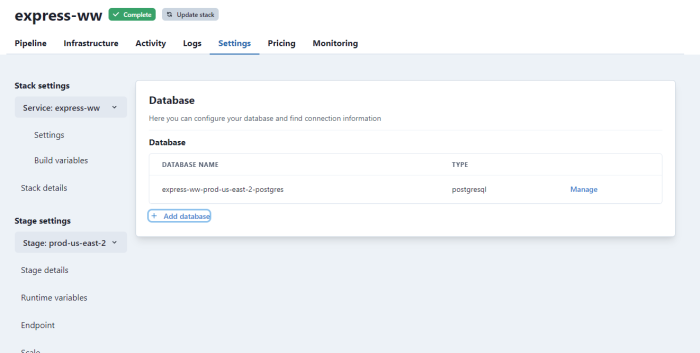
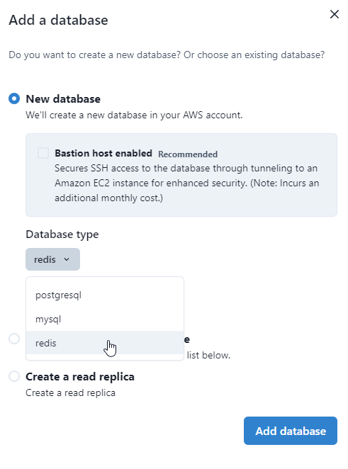
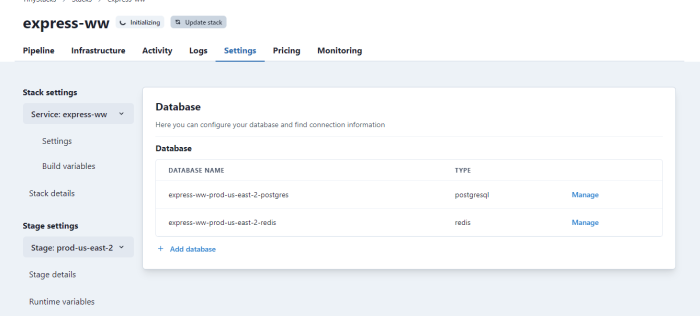
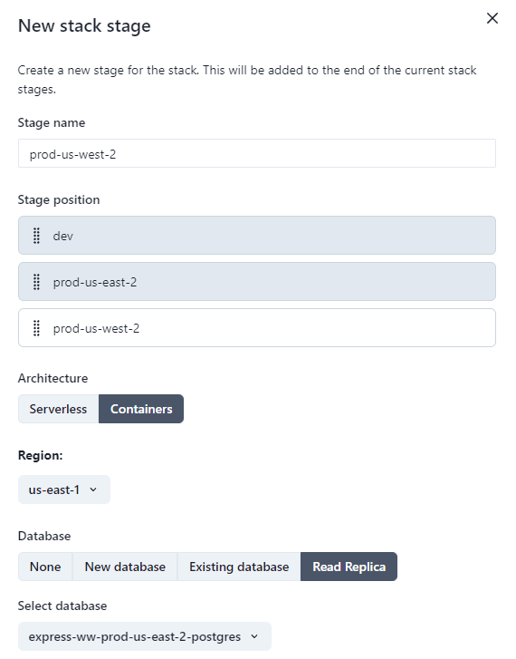
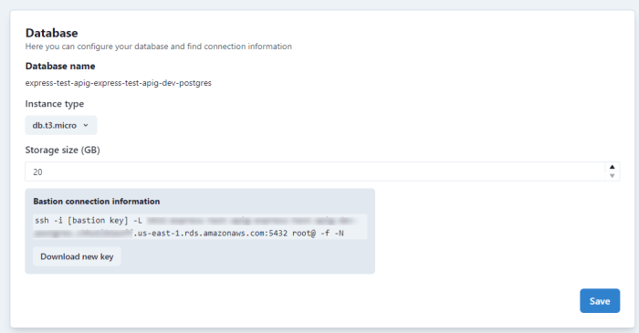
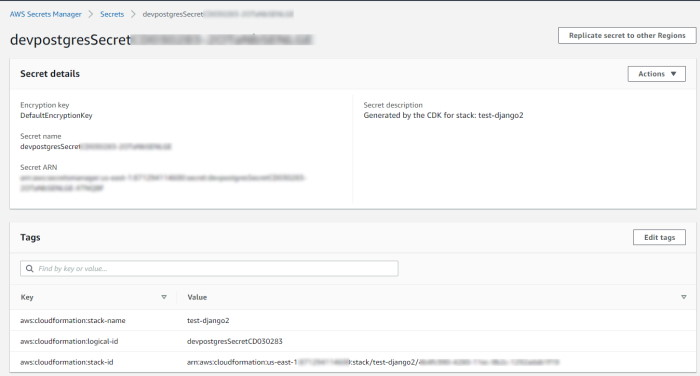
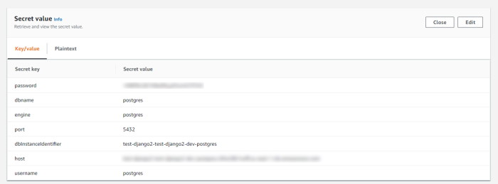

Databases
TinyStacks supports creating one or more databases as part of your stack. You can also choose to pass in a database you have already created in your AWS account.
Changing your stack's database settings
Go to your Stacks page and, for the stack you want to modify, click the gear icon in the lower right corner. This will open the Settings page. In the left hand column, under Stage, select the stage to which you want to add a database. Then, from the same column, select Database.
You will see two different screens here depending on whether your stage currently has a database or not. If it has a database, you will see a screen that enables you to change the instance type for your database as well as the amount of disk storage used.

If your stage currently has no database, you will see the following screen. You can either add a new Postgres, MySQL, or Redis database. You can also add another existing AWS database to your stack.

Note: Saving your changes will trigger a rebuild of your stage. Your application may not be accessible on this stage until the rebuild and redeploy has completed.
Adding multiple databases to a stage
You can add multiple databases to a stage once it is created. You can add one instance apiece of a Postgres, MySQL, or Redis database to each stage.
To add a new database to a stage, select your stack from the Your stacks dashboard to view all of its stages. From the Stages page, click the database icon for the stage where you will add your database. This will take you to the Databases settings page.

From the Databases page, click the + Add database text to add a new database to the stack.

On the Add a database dialog, select the database you wish to add from the supported types.

After you click Add database, TinyStacks will launch an update of your stack to create the new resource in your AWS account.

Connecting to your database from your application
When you have TinyStacks create a database for you, we push all information about the database - including username and password - into a set of runtime variables. These are exposed to your application as environment variables in your Docker container instances.
If you create a Postgres database, the variables pushed include:
- PG_HOST: The IP address
- PG_PORT: The port on which the Postgres database is running
- PG_CREDENTIALS_SECRET: The password for connecting to your Postgres database
- PG_DATABASE: The name of the database on the database host server
For MySQL, the variables are:
- MYSQL_HOST: The IP address
- MYSQL_PORT: The port on which your MySQL database is running
- MYSQL_CREDENTIALS_SECRET: The password for connecting to your MySQL database
- MYSQL_DATABASE: The name of the database on the database host server
For Redis, the variables are:
- REDIS_HOST: The IP address
- REDIS_PORT: The port on which your Redis database is running
- REDIS_CREDENTIALS_SECRET: The password for connecting to your Redis database
- REDIS_DATABASE: The name of the database on the database host server
Your application code should be able to access these values the same as it would any other environment variable (e.g., process.env in Node.js or os.environ.get() in Python).
Redis support
TinyStacks supports adding a Redis database to your stages.
Redis is an in-memory key-value store that provides rapid access to cached data. Using an in-memory database is a common design pattern that enables applications to access data without repeated reads to a disk-based database. This reduces congestion on your database, which in turn increases request response times and reduces the risk of database timeouts during high-traffic periods. Your application can also use an in-memory database to store calculated values (e.g., a user's Most Recently Used list) that can be accessed safely by multiple nodes in your application cluster.
TinyStacks creates a Redis instance in your AWS account using AWS ElastiCache for Redis.
Creating a read replica
When you add a new stage to a stack, you have the option of adding a read replica, a read-only version of your database.
Read replicas are useful for offloading read activity from your main database. The majority of Web applications see far more data reads than they do data writes. (Consider how many people browse a product catalog versus actually making a purchase.) By offloading reads, you reduce the risk of overloading your primary database and improve overall application performance and stability.
Read replicas can also help with application performance. By placing read replicas in different AWS regions, you can reduce latency between your application and database.
Finally, you can promote a read replica to primary in the event your primary suffers a service disruption (e.g., the Availability Zone hosting it becomes unavailable). This helps ensure continuity of business.
Read replicas are only available for Postgres and MySQL databases.
For more information on read replicas on AWS, see the documentation on AWS's web site.
Creating a read replica
You can create a read replica in every new stage in a stack. Read replicas can exist in any AWS region supported by TinyStacks. For example, if your application serves the US market primarily, you could create your main production stack in us-east-2 and then a regional deployment with a read replica in us-west-2. If you then expand to the Asia market, you could create another regional deployment with read replica in ap-northeast-1.
To add a read replica to a stack, navigate to your stack and click the New stage button. On the New Stage dialog, you'll have the option to create a database for the stage. Select Read Replica.

Connecting to your replica vs. connecting to your primary
To effectively use read replicas, your application will need to route database requests to the appropriate endpoint. To enable this, TinyStacks adds an additional set of runtime variables to your application's Docker container. These are PG_READER_HOST and PG_READER_PORT for a PostgreSQL database and MYSQL_READER_HOST and MYSQL_READER_PORT for a MySQL database.
You will then need to alter your application code to be aware of the replica and route read operations to it. How you do this will differ based on what application framework you use. Some packages, such as the ORM library Sequelize, have built-in support for read replicas.
Using a bastion host
By default, your database is only accessible from the same VPC in which your application runs. However, many teams will want to connect directly to their databases to run queries with tools like MySQL Workbench.
To enable these scenarios, you need to create a bastion host. The bastion host is an Amazon EC2 instance that sits in your VPC and creates a secure SSH tunnel so you can connect to your database. The SSH connection requires using public key cryptography, which prevents unauthorized users from connecting to your bastion and attempting to access your database.
Creating a bastion host
You can create a bastion host when you initially launch your stack and configure your database. If you didn't add a database to your stack yet, you can navigate to Stack Settings for your stack and add it under Stage settings -> Database.
Connecting to your bastion host
To connect to your database, navigate to your stack's Stack settings page. Under Stage settings -> Database, you'll see a box labeled Bastion connection information. Here, you can download the private key you'll need to connect to your database.

Once downloaded, place your private key somewhere on your computer where you can reference it easily. Make sure you secure the machine on which the private key exists; anyone with access to this key and your bastion's connection information could use this to attempt to gain access to your database.
The ssh command provided doesn't connect you directly to the bastion. Rather, it connects you to your database, using the bastion host as a tunnel. The various arguments to the command have the following meaning:
-i: Ensures the connection is made using a private key that matches to a public key on the server.-L: Designates the connection as a tunnel. The argument specifies a localhost port, the bastion endpoint, and the port on the RDS database. This port will differ if you use different database systems (5432 for Postgres, 3306 for MySQL, etc.).-f: Forces the SSH connection into the background.-N: Prohibits remote command execution on the bastion - the connection can only forward commands to the Amazon RDS database.
After you open this tunnel, you can use your sql client or CLI to connect to the database using the credentials found in AWS Secrets Manager (see below). Instead of using the RDS endpoint as host, you specify localhost.
If you prefer to use a visual tool, like MySQL Workbench, you can configure the tool to connect to your database via an SSH tunnel using your connection information and your SSH private key. Consult your tool's documentation for detailed constructions on configuring SSH tunnels.
Accessing your database's credentials (username and password)
You will, of course, still need your database's username and password to connect to it!
Your database username and password are stored securely in your AWS account using AWS Secrets Manager. You can see these secrets by navigating to AWS Secrets Manager in your AWS account.

You can identify the correct secret for your application from the AWS Console in two ways:
- The Secret description of the stack, which will contain the name you gave your stack at stack creation time.
- The tag aws:cloudformation:stack-name, which will also contain the name of your secret.
If you have multiple stages, you will have multiple secrets. You can distinguish them by the name of the secret, which will have the name of the stage pre-pended. In this example, since this is our database for our dev stage, it starts with the prefix dev.
In the AWS Console, you can see the information stored in this secret by expanding the Secret value dropdown. There, you can see all of the information required to connect to your database.

If you need to retrieve these values programmatically, you can do so using the AWS Command Line Interface (CLI) or any of the APIs available for programmatic access. For example, using the AWS CLI, you can retrieve the secret you need by searching for all secrets where the tag aws:cloudformation:stack-name matches your stack name. You can then use the command jq to filter out the return values to get the correct database for your stage.
aws secretsmanager list-secrets --region us-east-1 --filters Key=tag-key Values=aws:cloudformation:stack-name Key=tag-value,Values=test-django2 | jq '.[][] | select(.Name|test("^dev"))